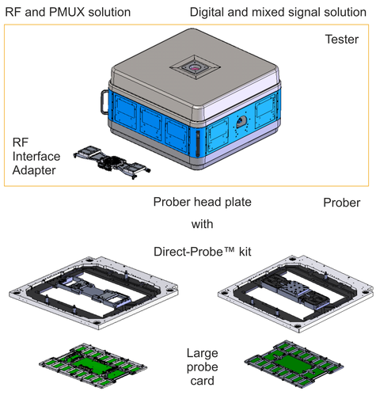
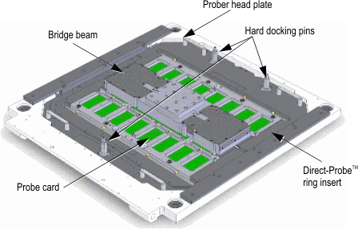

Direct-Probe interface
Direct-Probe™ technology is a combined solution for an Advantest-designed wafer probe interface and for probers from various prober manufacturers, designed for compatibility.
| Supported V93000 systems : Pin Scale, Smart Scale, EXA Scale |
Solutions
Note The drawings in this guide serve as conceptual descriptions only and may
differ from the latest original design drawings. For the original drawings see Direct-Probe probe card layout information and Direct-Probe stiffener.
Advantest provides three Direct-Probe solutions:
- Solution for Advantest's Wave Scale RF and PMUX technology
- Solution for Advantest's Port Scale RF technology
- Solution for Advantest's digital and mixed signal technology

The prober head plate hosts the Direct-Probe kit that consists of the Direct-Probe ring insert and the bridge beam. Direct-Probe ring insert and bridge beam are designed to frame the probe card.
Direct-Probe probe card
The main tasks of the Direct-Probe probe card are
- to minimize the number of signal transitions and reduce the length of the signal path for improved signal quality and
- to provide maximum component placement areas on the probe card pcb to support higher test program coverage at wafer probe.
Direct-Probe™ prober functions:

- The bridge beam locks the probe card to the prober head plate. It provides the planarity reference and mechanism through which the forces from the probes can be transferred efficiently to the prober head plate structure, see paragraph Interfaces to DUT and prober head plate in Direct-Probe probe card specifications.
Functional changes
- Introduced in SmarTest 6.5.4